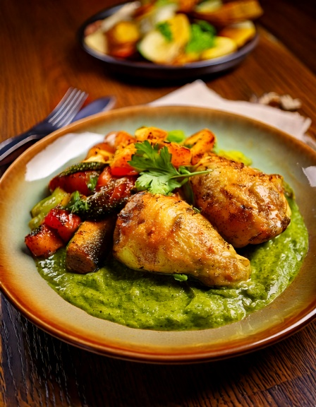

El clásico guiso ecuatoriano de pollo braseado en cilantro -- el verdadero sabor del seco, servido con verduras extra en lugar del tradicional montón de arroz.
Información Nutricional (por porción)
238
Calorías
6g
Carbohidratos
40g
Proteína
5g
Grasa
2g
Fibra
~25
IG Est.
Por qué encaja en una dieta apta para diabéticos
El seco de pollo en sí -- pollo braseado en una salsa de cilantro, ajo y cerveza -- tiene muy pocos carbohidratos por sí solo. Las versiones de restaurante suelen apilar un gran montículo de arroz blanco al lado; omitir el arroz y servirlo con verduras asadas o salteadas en su lugar mantiene el verdadero sabor del pollo braseado mientras reduce drásticamente la carga glucémica de la comida.
Ingredientes
- 1.5 lb675 g muslos de pollo sin hueso y sin piel
- 1 cup40 g cilantro fresco, licuado en pasta con un poco de agua
- 11 cebolla, picada
- 3 cloves3 cloves ajo, picado
- 1 cup240 ml cerveza liviana o caldo de pollo bajo en sodio
- 3 cups3 cups verduras mixtas asadas (zapallito, morrón, cebolla), para servir
En la app
Registra comidas como esta y controla carbohidratos e índice glucémico automáticamente — gratis en la app de GlucoBeacon.
También en la app — gratis
- 🍽️ Asesor de Restaurantes — más de 3,700 platillos de 53 cadenas
- 📷 Cámara de Comida con IA — apunta, escanea y conoce tus carbohidratos al instante
- 🩺 Estimador de A1C — a partir de tus lecturas registradas
Instrucciones
- Saltea la cebolla y el ajo en una olla grande hasta que estén blandos, unos 5 minutos.
- Agrega los muslos de pollo y dora ligeramente por ambos lados.
- Incorpora la pasta de cilantro y la cerveza o el caldo, tapa y cocina a fuego lento 25-30 minutos hasta que el pollo esté tierno.
- Sazona con sal y pimienta a gusto.
- Sirve caliente junto a una porción generosa de verduras mixtas asadas en lugar de arroz.